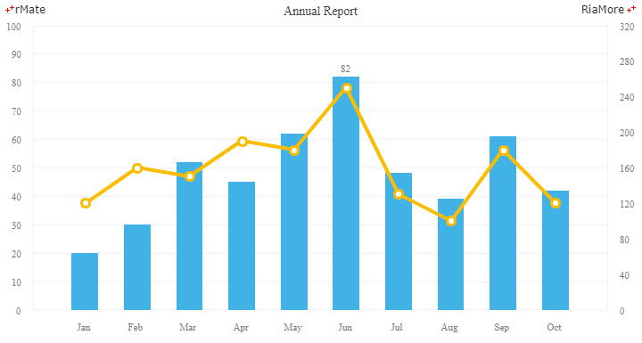
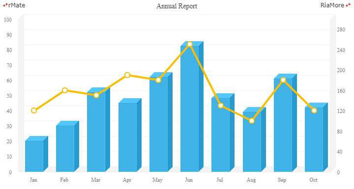
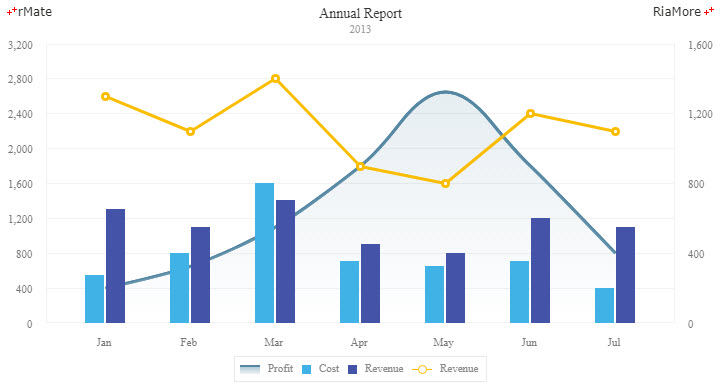

콤비네이션 차트
콤비네이션 차트는 컬럼 차트와 라인 차트(혹은 영역 차트)를 결합한 형태의 차트입니다.
이 때 차트에 표시되는 컬럼과 라인은 X 축의 동일한 카테고리(예, 1월, 2월, 3월, ..)에 대해서 다른 데이터 카테고리(예, 컬럼:수입, 라인:비용)를 표현합니다.
따라서 어떤 데이터 카테고리의 값이 높고 낮은지 한눈에 비교하기 좋은 차트 유형입니다.
콤비네이션 차트는 <Combination2DChart> 노드의 series 속성값에 <Column2DSeries> 노드와 <Line2DSeries>(혹은 <Area2DSeries> 노드) 노드를 함께 설정하여 생성할 수 있습니다.
다음은 <Column2DSeries> 노드와 <Line2DSeries> 노드를
<Combination2DChart> 노드에 함께 정의하는 코드와 이를 적용해서 출력한 차트의 예제입니다.
이 예제에서는 컬럼 시리즈와 라인 시리즈에 서로 다른 Y 축을 적용하기 위하여 두 개의 <verticalAxis> 노드를 정의하였습니다.
축 생성에 관한 더 자세한 내용은 축과 스케일을 참조하십시요.
<Combination2DChart showDataTips="true">
<horizontalAxis>
<CategoryAxis categoryField="Month" padding="1"/>
</horizontalAxis>
<verticalAxis>
<LinearAxis id="vAxis1" formatter="{numfmt}" maximum="100" interval="10"/>
</verticalAxis>
<series>
<Column2DSeries labelPosition="outside" yField="Profit" displayName="Profit" showValueLabels="[5]" columnWidthRatio="0.54">
...
</Column2DSeries>
<Line2DSeries radius="6" yField="Cost" displayName="Cost" itemRenderer="CircleItemRenderer">
<verticalAxis>
<LinearAxis id="vAxis2" interval="40" maximum="320"/>
</verticalAxis>
...
</Line2DSeries>
</series>
<verticalAxisRenderers>
<Axis2DRenderer axis="{vAxis1}" showLine="false"/>
<Axis2DRenderer axis="{vAxis2}" showLine="false"/>
</verticalAxisRenderers>
</Combination2DChart>

See the CodePen 알메이트 차트 - 콤비네이션 차트
3D 콤비네이션 차트
3D 콤비네이션 차트는 <Combination3DChart> 노드를 설정하여 생성할 수 있습니다.
다음은 <Column3DSeries> 노드와 <Line2DSeries> 노드를 <Combination3DChart> 노드에 정의하는 코드와 이를 적용해서 출력한 차트의 예제입니다.
이 예제에서는 컬럼 시리즈와 라인 시리즈에 서로 다른 Y 축을 적용하기 위하여 두 개의 <verticalAxis> 노드를 정의하였고, 3D 축 생성을 위해서 <verticalAxisRenderers> 속성에 <Axis3DRenderer> 노드를 정의하였습니다.
축 생성에 관한 더 자세한 내용은 축과 스케일을 참조하십시요.
<Combination3DChart showDataTips="true">
<horizontalAxis>
<CategoryAxis categoryField="Month" padding="0.5"/>
</horizontalAxis>
<verticalAxis>
<LinearAxis id="vAxis1" formatter="{numfmt}" maximum="100" interval="10"/>
</verticalAxis>
<series>
<Column3DSeries columnWidthRatio="0.6" selectable="true" yField="Profit" displayName="Profit">
...
</Column3DSeries>
<Line2DSeries radius="6" yField="Cost" displayName="Cost" itemRenderer="CircleItemRenderer">
<verticalAxis>
<LinearAxis id="vAxis2" maximum="300"/>
</verticalAxis>
...
</Line2DSeries>
</series>
<verticalAxisRenderers>
<Axis2DRenderer axis="{vAxis1}" showLine="true"/>
<Axis2DRenderer axis="{vAxis2}" showLine="true"/>
</verticalAxisRenderers>
</Combination3DChart>

See the CodePen 알메이트 차트 - 3D 콤비네이션 차트
다중 컬럼 시리즈를 적용한 콤비네이션 차트
콤비네이션 차트에 표현되는 특정 유형의 차트에 다중 데이터 시리즈가 적용될 수 있습니다.
이 때는 다중 데이터 시리즈가 적용되는 차트 시리즈에 Set 노드(<Area2DSet>, <Column2DSet>, <Column3DSet>)를 정의해야 합니다.
다음은 이에 대한 코드와 이를 적용해서 출력한 차트의 예제입니다.
이 예제에서는 두 개의 컬럼 시리즈를 <Column2DSet> 노드에 정의하였고, 라인 시리즈(<Line2DSeries>)에는 우측에 표시된 Y 축이 적용되었습니다. 축 생성에 관한 더 자세한 내용은 축과 스케일을 참조하십시요.
<Combination2DChart showDataTips="true">
<horizontalAxis>
<CategoryAxis categoryField="Month" padding="0.7"/>
</horizontalAxis>
<verticalAxis>
<LinearAxis id="vAxis1" interval="400" formatter="{numFmt}" maximum="3200"/>
</verticalAxis>
<series>
<Area2DSeries yField="Profit" form="curve" displayName="Profit">
...
</Area2DSeries>
<Column2DSet type="clustered">
<series>
<Column2DSeries yField="Cost" displayName="Cost">
...
</Column2DSeries>
<Column2DSeries yField="Revenue" displayName="Revenue">
...
</Column2DSeries>
</series>
</Column2DSet>
<Line2DSeries yField="Revenue" radius="4.5" itemRenderer="CircleItemRenderer" displayName="Revenue">
...
<verticalAxis>
<LinearAxis id="vAxis2" interval="400" formatter="{numFmt}"/>
</verticalAxis>
...
</Line2DSeries>
</series>
<verticalAxisRenderers>
<Axis2DRenderer axis="{vAxis1}" showLine="false"/>
<Axis2DRenderer axis="{vAxis2}" showLine="false"/>
</verticalAxisRenderers>
</Combination2DChart>

See the CodePen 알메이트 차트 - 다중 컬럼 시리즈를 적용한 콤비네이션 차트